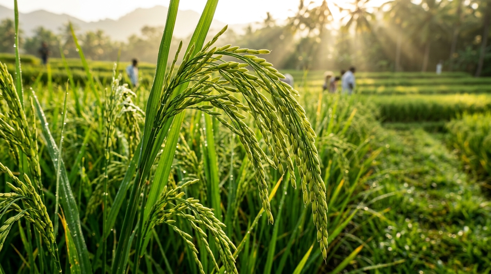
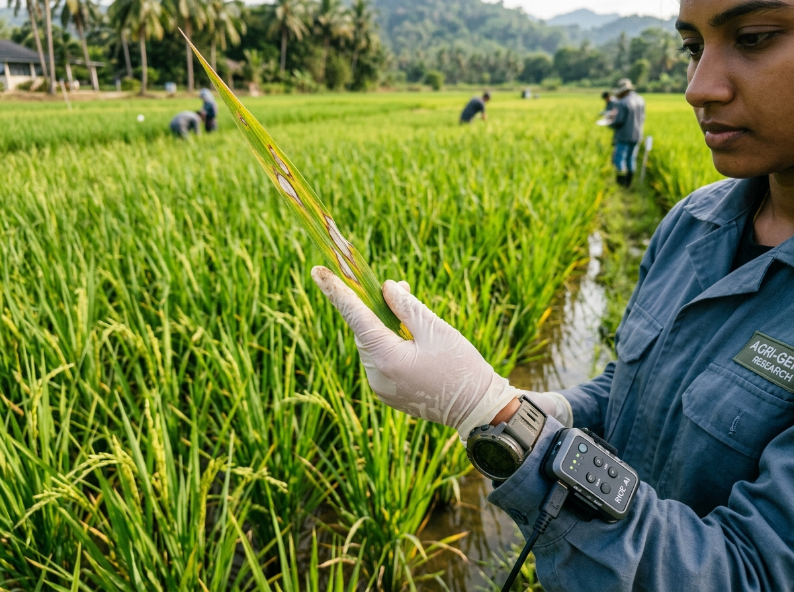
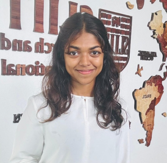

Evidence-led crop intelligence
CropGuard builds on research in mobile plant-disease classification, active learning, transfer learning, model quantization, retrieval-augmented generation, and offline-first field applications.
An Edge AI and active learning framework for paddy disease detection and region-aware agricultural advisory, designed for the real-world conditions of Sri Lankan farming.

In Sri Lanka, paddy diseases like bacterial leaf blight and brown spot inflict catastrophic damage, costing approximately 10% of the Maha season harvest. Rural smallholder farmers lack immediate access to plant pathologists, while cloud-dependent AI tools fail completely without reliable internet coverage.

CropGuard builds on research in mobile plant-disease classification, active learning, transfer learning, model quantization, retrieval-augmented generation, and offline-first field applications.
Existing solutions often depend on connectivity or laboratory imagery. This project addresses the gap through regional adaptation, uncertainty review, edge optimization, and grounded local advice.
The framework combines MobileNetV2, TensorFlow Lite Float16 quantization, TinyML edge inference, transfer learning, active learning, vector retrieval, and Gemini API multilingual synthesis.
CropGuard combines four interdependent modules into an end-to-end framework built specifically for Sri Lankan rice cultivation.
MobileNetV2 classifier trained on 8 paddy classes with an 80% confidence uncertainty check. Low-confidence cases are cached locally and synchronized for expert agricultural officer annotation.
Solves the lab-to-field domain shift using hard-example mining and class weighting. Fine-tunes base models for agro-climatic zones like Jaffna and Galle, drastically reducing false-healthy predictions from 95 to 4.
Compresses full-precision models down to Float16 TensorFlow Lite format. Achieves an 80% size reduction (21.53 MB to 4.6 MB) with 97.18%–97.40% accuracy and ~3s inference on low-memory edge devices.
Vector retrieval anchored in verified Department of Agriculture Sri Lanka treatment manuals. Utilizes Gemini API for safe structuring and trilingual delivery in Sinhala, Tamil, and English with safe fallback.
Clear separation between on-device real-time inference, opportunistic data synchronization, and grounded expert supervision.
Farmer captures field leaf photo. Image is preprocessed and passed to the 4.6 MB Float16 MobileNetV2 model directly on the phone.
Predictions ≥80% show immediate disease results. Cases <80% are flagged as uncertain and stored in local SQLite cache.
Agricultural officers assign labels, administrators verify for retraining. Advisory queries verified Dept of Agriculture manuals in 3 languages.
Five systematic engineering steps governing dataset acquisition, edge quantization, active learning, and multilingual advisory.
8-class paddy disease dataset (70% train, 15% val, 15% test). Standardized image tensor scaling.
Trained MobileNetV2 baseline achieving 97.45% accuracy on curated test set after pipeline calibration.
Float16 post-training quantization reducing footprint by 80% (21.53 MB to 4.6 MB) with 97.18% accuracy.
80% uncertainty gating, two-role expert labeling, and hard-example mining boosting field accuracy to 53.50%.
Dept of Agriculture vector index + Gemini API structuring trilingual recommendations with safe fallback.
Authentic performance numbers reported in the CropGuard research paper across model compression, unseen field generalization, and trilingual coverage.
| Metric | Before Compression | After Compression |
|---|---|---|
| Model Size | 21.53 MB | 4.6 MB (-80%) |
| Format | Keras (.keras) | Float16 TFLite |
| Accuracy | 97.45% | 97.18% – 97.40% |
| Inference Time | 3 s | 3 s |
| Metric | Model V4 | Model V4.1 (Deployed) |
|---|---|---|
| Accuracy (Seen Test Set) | 82.86% | — |
| Accuracy (Unseen Field Images) | 37.24% | 53.50% (+16.26%) |
| False-Healthy Predictions | 95 cases | 4 cases (-95.8%) |
| Deployment Decision | Rejected | Selected Deployed Model |
Progress milestones governing the academic evaluation cycle at SLIIT Faculty of Computing. Select an assessment to inspect requirements and status.
Formal academic defense of the CropGuard research framework. Outlines rural smallholder challenges in Sri Lanka, the offline-first TinyML thesis, member sub-objectives, and baseline feasibility.
Browse the project charter, research proposal, progress presentations, updated progress work, and final thesis.
Initial project documentation
Proposal report and presentation
Progress review and initial findings
Progress review and initial findings
Updated paper and methodology
Complete thesis document
Defense presentation slide decks delivered to the examination panel at SLIIT Faculty of Computing.
Introduction to the offline-first paddy disease problem, literature review, proposed TinyML architecture, and individual work distributions.
Interim defense showcasing baseline MobileNetV2 training, initial Float16 quantization findings (4.6 MB), and local sample caching protocols.
Demonstration of regional model adaptation (V4.1), two-role expert portal approval, and preliminary RAG multilingual generation in Sinhala and Tamil.
Comprehensive final research defense across all four components, complete system demonstration, limitations analysis, and examination committee Q&A.
Undergraduate researchers from the Faculty of Computing, Sri Lanka Institute of Information Technology (SLIIT).
Lead researcher for on-device TinyML compression. Investigated post-training Float16 quantization, pruning, and low-latency inference on low-memory Android devices.
it221130716@my.sliit.lkLead researcher for baseline MobileNetV2 classification and active learning. Engineered the 80% confidence threshold gating and two-role expert validation workflows.
it22065094@my.sliit.lkLead researcher for regional transfer learning. Applied hard-example mining and class weighting to bridge domain shift on field imagery from Jaffna and Galle regions.
it22100320@my.sliit.lk
Lead researcher for localized agronomic advisory. Built the retrieval index grounded in Department of Agriculture manuals and Gemini API multilingual structuring.
it22059840@my.sliit.lkGuiding research methodology, edge architecture rigor, and assessment compliance.
Have questions regarding our TinyML edge architecture, replication benchmarks, or potential agronomic field trials in Sri Lanka? Reach out to the team.